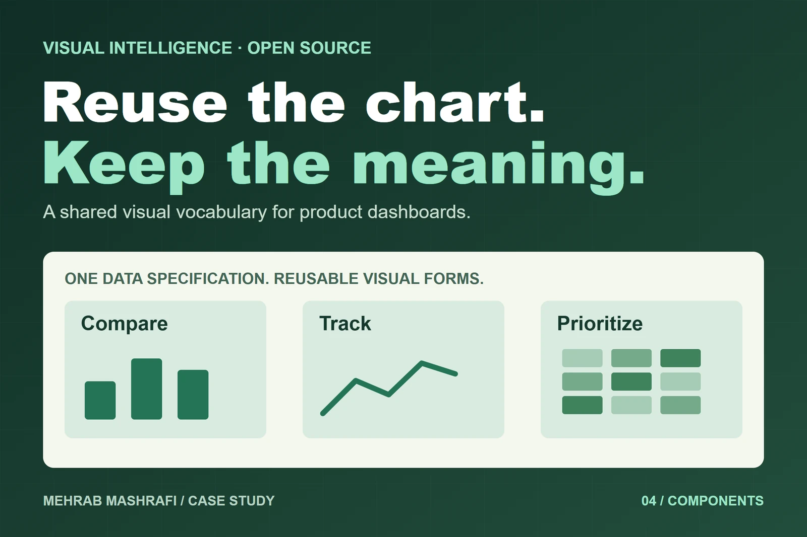

Open source reporting tools · Open source library
Reuse the chart, keep the business meaning
The same KPI kept being redrawn in different ways across products. I defined a shared reporting standard and data specification, then organised a reusable component library and its integration into the credit union platform.

- My role
- Reporting standard, catalogue planning and integration lead
- Work
- Shared data specification, component themes and ERPNext/Frappe integration
- Project context
- Open source library, original delivery and public release
01 / Situation
A familiar metric should stay familiar.
Repeated dashboard work meant KPI cards, risk matrices and strategy frameworks could look different in each product. A new report could bring another design decision, implementation and QA cycle for the same visual form.
I wanted the management question to determine the chart, with consistent presentation wherever it appeared. That led to a library of reusable reporting components rather than another set of isolated dashboard screens.
02 / My role
Define the standard before expanding the catalogue.
I defined which visual forms belonged to common reporting questions: KPIs, trends, funnels, risk, strategy and model generated insight. I designed a shared data specification, planned the catalogue by category and sequenced its delivery.
I also owned integration into the credit union platform’s dashboards. The wider implementation used React and TypeScript components, shared themes and an ERPNext/Frappe adapter. My contribution combined reporting design and delivery ownership with application integration.
One contract, several dashboard views
- 01
Reporting question
Choose the visual form - 02
Data specification
Supply the expected fields - 03
Shared component
Apply the widget and theme - 04
Application dashboard
Integrate permissions and calculations
03 / Decisions
Separate the view from the calculation.
A shared widget card and theme made the components behave as a family. The catalogue included everyday business charts alongside strategy frameworks such as SWOT and risk matrices, so those views could sit beside the data they describe.
The important boundary was the input contract. A forecast band displays supplied forecast values; it does not generate a forecast. An insight card presents an insight; it cannot establish whether that insight is correct.
Applications still need their own pipelines, calculations, authentication and access controls. Keeping these responsibilities explicit makes a reusable chart easier to integrate without confusing presentation with analysis.
04 / Delivery
Reusable parts with examples people can inspect.
The original delivery comprised 48 components across six categories. The later public release expanded the gallery to 65 example pages across eight categories, including combined showcases and a responsive lab. These are different counts: components in the initial delivery and pages in the gallery.
The library is available under MIT, including commercial use. Developers can inspect examples, props, usage code and source before integrating a component.
The result is a shared visual language and implementation base. The credit union dashboard integration is a concrete use of that base.
Original component delivery
48
Components across six categories.
Later public gallery
65
Example pages across eight categories.
Component and example page counts describe different things and should not be compared as an adoption metric.
Explore the implementation
Open the work
Which visual does your team keep rebuilding?
Bring a recurring reporting question and the data shape behind it. We can assess the component and the integration it needs.
Discuss reporting components ↗ Email meProject experience by Mehrab Mashrafi. Updated .